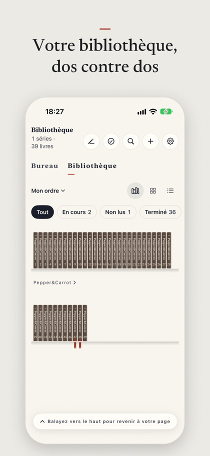
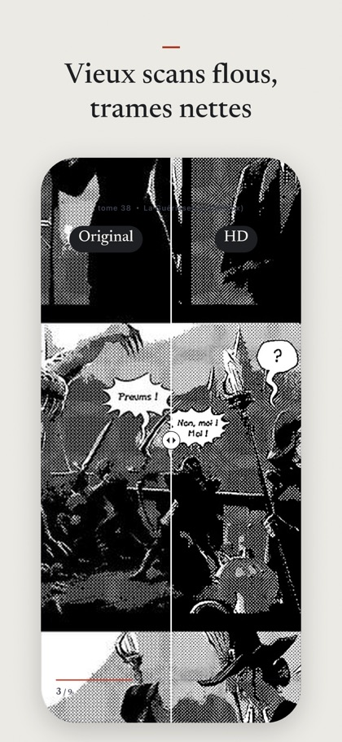
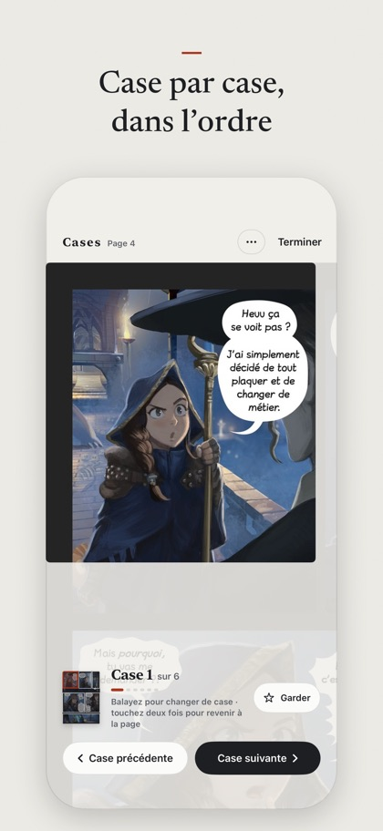
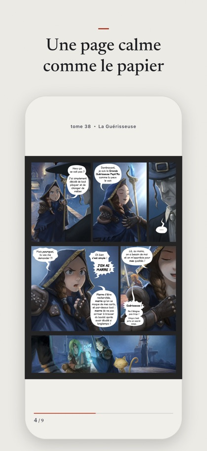
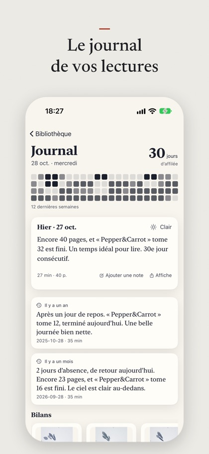

Le manga sur écran pliable
Lisez votre propre bibliothèque : CBZ, EPUB, PDF, dossiers d’images, ou un serveur Komga / OPDS sur votre NAS. Même les vieux scans basse définition gardent leurs trames et leurs traits.
La version 1.0 est en test sur TestFlight. Le lien App Store apparaîtra ici à la sortie.





HD
Le modèle de super-résolution manga entraîné pour l’app agrandit les pages noir et blanc basse définition sans empâter trames ni traits. La première fois, choisissez « Imprimé » ou « Lisse », comme chez l’opticien.
Case par case
Cases et bulles sont détectées automatiquement et affichées une à une dans le sens de lecture.
Traduction
Les dialogues sont traduits sur l’appareil ; maintenez le doigt pour voir l’original.
Papier et encre
Un ton papier sobre, une étagère de vrais dos de livres, et une lecture de nuit qui suit le mode sombre.
Journal de lecture
Ce que vous lisez chaque jour et combien de temps, avec votre meilleure case qui prend vie.
Confidentialité
Aucune donnée collectée. Votre bibliothèque et votre historique restent sur vos appareils et dans votre propre iCloud.
Les mises en page iPhone Duo — écran extérieur, double page ouverte et position tente — sont réglées sur le simulateur pour l’instant ; les réglages sur l’appareil réel commencent fin novembre 2026.
Captures et exemple intégré : Pepper&Carrot de David Revoy, CC-BY 4.0.